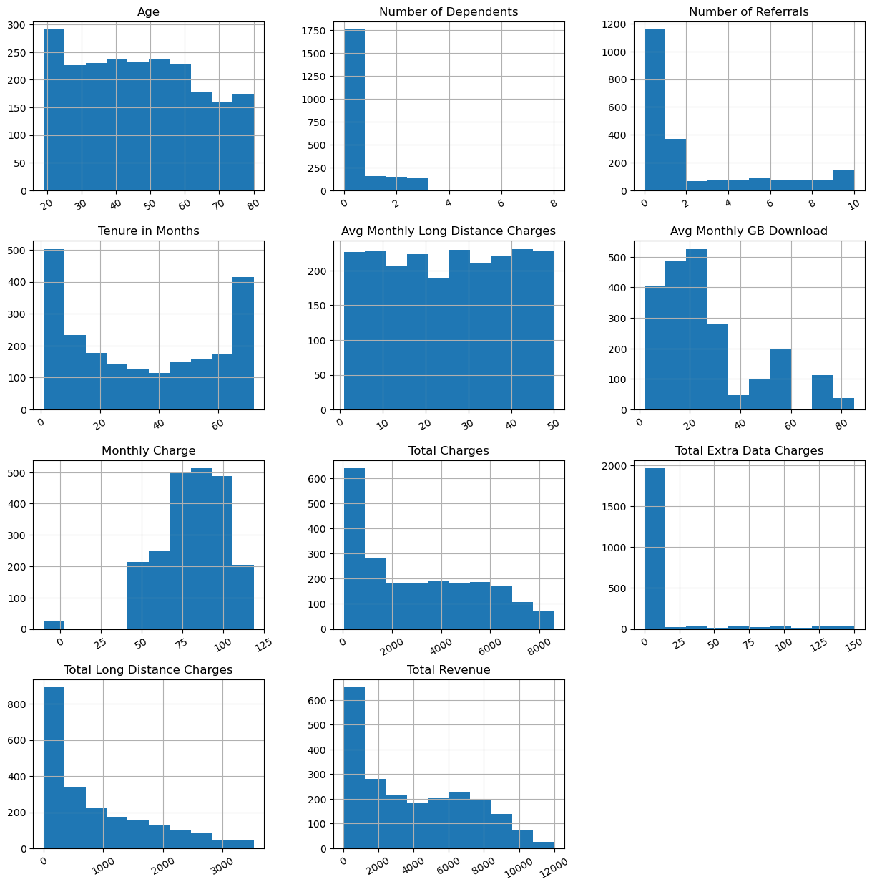
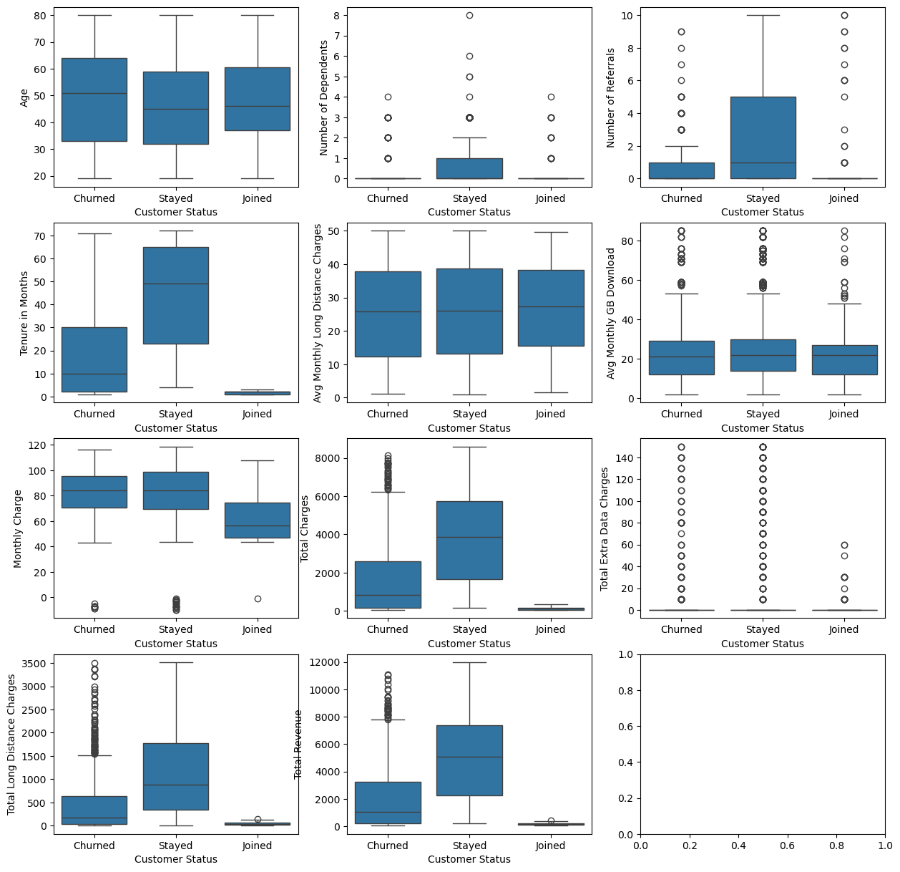

Customer Churn Prediction
OBJECTIVE
To build a predictive model that can accurately identify customers at risk of churning from a telecommunications company. The ultimate goal is to improve customer retention by allowing the business to proactively engage with these high-risk customers.
CHALLENGES
The primary challenge was to find a machine learning model that could effectively learn from a complex dataset containing over 7,000 customers and nearly 40 features. This involved:
- Understanding which demographic and service-related factors significantly influence a customer's decision to leave.
- Handling a large number of categorical features and preparing them for a predictive model.
- Developing a model with a high-enough accuracy score to be useful for business decisions.
METHODOLOGY
Our approach followed a structured data science workflow:
- Exploratory Data Analysis & Preprocessing: We began by exploring the raw data, dropping irrelevant columns such as customer IDs and location coordinates. We also handled missing values and used techniques like label and one-hot encoding to convert categorical data into a usable format.
- Feature Scaling: All numerical features were scaled using a MinMaxScaler to ensure that all variables contributed equally to the model's training process.
- Model Building & Selection: We tested several machine learning algorithms to find the best fit for our dataset. These included Logistic Regression, Random Forest, and Decision Trees.
- Model Evaluation: The chosen model's performance was rigorously evaluated on unseen data to measure its predictive accuracy and its ability to correctly classify customers.
ANALYSIS
Through our analysis, we identified that the XGBClassifier model was the most effective for this dataset, achieving an accuracy of approximately 82.7% on the test set.
Key factors that contribute to customer churn include:
- Customer Demographics: We observed correlations between customer status and demographic information like age and marital status.
- Service & Contract Type: Our analysis also indicated that the type of contract and subscription services are significant predictors of whether a customer will stay, churn, or join.
Link to project

Distribution of Numerical Features by Customer Status with Outlier Analysis

Frequency Distribution of Key Numerical Features